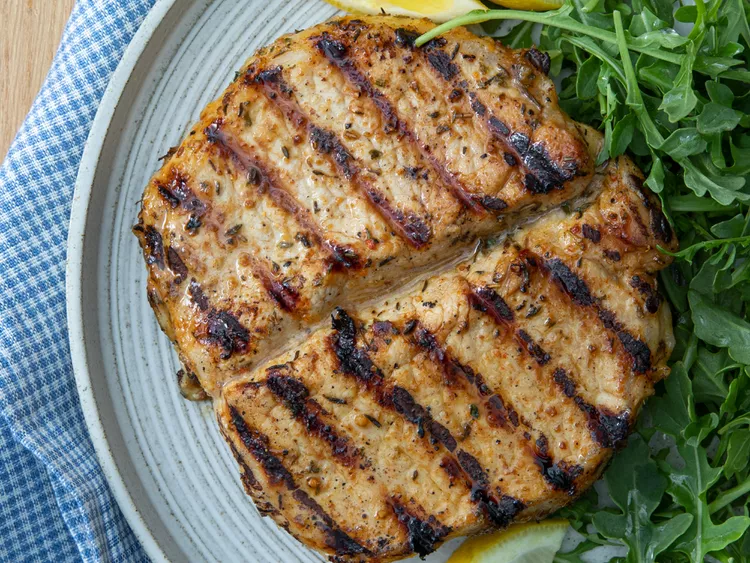

Home
Pork Chop Marinade Recipe

Description
This pork chop marinade is the best I've ever made. I started throwing
things together in a bowl and I'm so glad I wrote it down. The flavor is
best when pork is grilled. Try it and see!
Ingredients
- 2 large pork chops
- ¼ cup extra-virgin olive oil
- 4 cloves garlic, chopped
- 3 tablespoons dark brown sugar
- 2 tablespoons lemon juice
- 2 tablespoons spicy brown mustard
- 2 teaspoons dried thyme
- 1 teaspoon onion powder
- 1 teaspoon Worcestershire sauce
- 1 teaspoon white wine vinegar
- 1 teaspoon mesquite-flavored seasoning
- ½ teaspoon dried parsley flakes
- ½ teaspoon kosher salt
- ½ teaspoon freshly ground black pepper
Steps
- Gather all ingredients.
- Place pork chops on a flat work surface. Slice horizontally through the
middle, being careful not to cut all the way through to the other side.
Open the two sides and spread them out like an open book.
- Whisk olive oil, garlic, brown sugar, lemon juice, mustard, thyme, onion
powder, Worcestershire sauce, vinegar, mesquite seasoning, parsley, salt,
and pepper together in a bowl; pour into a large resealable plastic bag.
- Add pork chops, coat with marinade, squeeze out excess air and seal the bag.
Marinate in the refrigerator, 6 to 8 hours.
- Preheat an outdoor grill for medium-high heat and lightly oil the grate.
Remove chops from marinade and shake off excess. Discard remaining marinade.
- Cook chops on the preheated grill until nicely browned on each side and
slightly pink in the center, about 8 minutes per side. An instant-read
thermometer inserted into the center of each chop should read 145
degrees F (63 degrees C). Let rest for 5 minutes before serving.